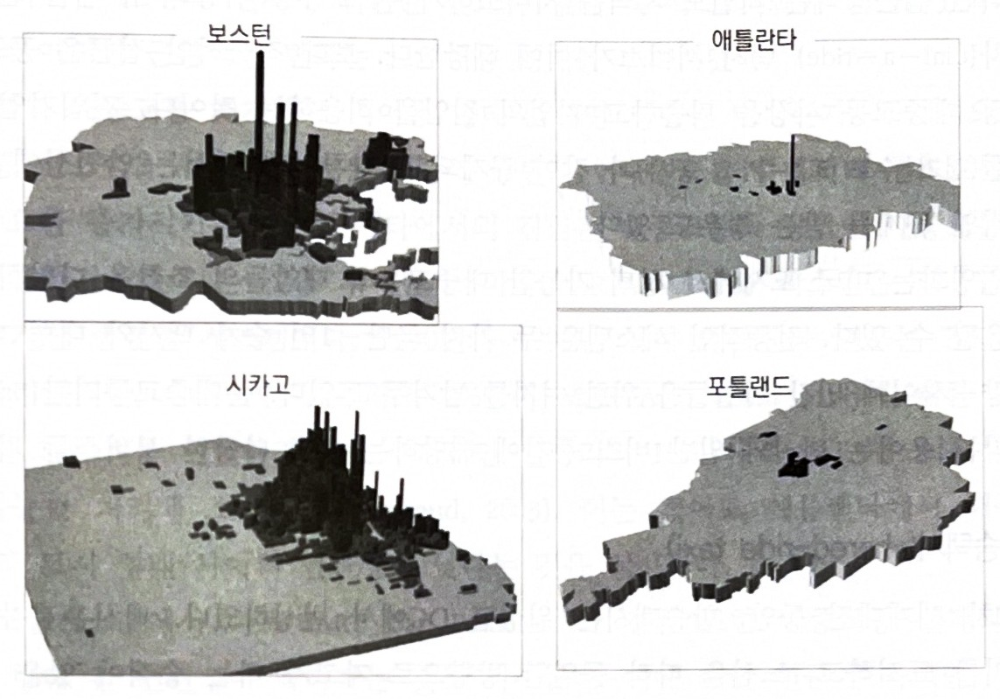

11주차. 도시교통
이 파일은 무엇인가
2026-11-10 교재 18·19장 전체 대조 후 본편에서 다시 쓴 장의 옛 판
뺀 문장: 교재에 없는 이음말 (18장 발문 「이제까지는 … 주택에서 봤음」, 19장 발문 「기울어진 운동장」, 마무리 「토지이용 정책이기도 함」)
뺀 수치: 미국 평균 첨두 혼잡세 $0.085 · 청구서 $48 계산, 운전자별 외부 사고비용 ($0.427 · $0.109 · $0.034)
2026-11-11 뺀 장: 「경전철 대 버스」(본편 33쪽, 교수 요청). 맨 뒤에 그대로 옮김
다시 쓴 것: 지난 시간 (인포그래픽으로), 첨두 혼잡세, 사고비용, 경전철 (그림 19−6 설명)
주의: 옛 판에는 오류가 있다. 사고비용 그림이 한계 사적 비용을 0.140(사회적 비용 합계)으로 찍었고, 그림 19−6 설명이 중전철을 경전철로 적었으며, 버스가 자동차와 경쟁하는 지점을 5~10천명으로 적었다 (교재 6,000명). 되살릴 때는 본편 것을 쓴다
지난 시간 — 도시주택과 공공정책
여과
주택은 내구적이라 품질사다리를 내려감. 얼마나 내려보낼지는 두 하부시장의 가격 차이가 정함
그래서 한 하부시장의 정책이 다른 하부시장으로 번짐. 신규 주택을 금지하면 낮은-품질 가격이 두 번 오름
네 가지 정책
공공주택은 1달러로 0.24달러의 편익을 줌. 바우처는 같은 후생을 1/4 비용으로 줌
되풀이된 구조
공급측면 정책은 밀어내기 때문에 넣은 만큼 늘지 않았고, 수요측면 바우처는 가격을 올려 중간-소득 가구에까지 번졌음
주택담보대출 지원은 사적비용을 사회비용보다 낮춰 주택자본을 효율적 수준 이상으로 늘림
거기서 나온 물음
가격이 사회적 비용을 반영하지 못할 때 무슨 일이 생기는지 봤음. 도로에서는 그 일이 매일 일어남
→ 오늘은 도시교통임. 18장은 자동차와 도로의 세 외부효과(혼잡·환경·교통사고)와 그 정책대응, 19장은 통행수단 선택과 대중교통 시스템의 선택을 봄
이제까지는 가격이 사회적 비용을 반영하지 못할 때 생기는 비효율을 주택에서 봤음
이 장에서는 그 일이 매일 일어나는 곳, 도로를 봄
자동차는 세 가지 외부비용을 냄 — 혼잡 · 환경의 저하 · 교통사고
외부비용에 대한 경제적 접근은 외부성을 내재화하는 세금임. 의사결정자가 자기 선택의 전체 비용을 지게 하는 것
→ 일단 외부비용이 내재화되면 시장이 알아서 작동함 — 개별 의사결정자가 효율적인 선택을 함
→ 오염의 효율적 수준이 0이 아니듯 혼잡의 효율적 수준도 0이 아님
첨두시간에만, 그리고 도시마다 다르게
수요가 낮으면 사적 비용곡선의 수평 구간에서 만나 혼잡이 없고 세금도 0 임. 수요가 높을수록 세금이 커짐
효율적인 첨두시간 혼잡세는 마일당 $0.085. 차량인식시스템으로 자동 징수하면 마일당 $0.24 일 때 한 달 20회 통행에 $48.00 의 청구서가 나간다
출처: Parry and Small, American Economic Review 99, 2009 (교재 그림 18−8, p.402)
→ 대안은 가치 기반 가격책정임. 통행료를 내면 혼잡 없는 차선(HOT Lane)을 쓸 수 있게 해 통행을 차별화된 상품으로 만듦
사고비용의 과소가격책정
주행 마일당 사회적 비용
| 사망 또는 부상 | 0.103 |
| 생산성 손실 | 0.013 |
| 의료비 | 0.008 |
| 재산 손해 | 0.007 |
| 법률, 경찰, 소방 | 0.004 |
| 보험 행정 | 0.003 |
| 교통 지연 | 0.002 |
| 합계 | 0.140 |
출처: Small and Verhoef, 2007 · Parry, Journal of Urban Economics 56, 2004 (교재 표 18−1, p.409)
→ 이 중 $0.061 이 운전자가 지지 않는 외부비용임
음영이 과소가격책정의 효율성 손실이다
→ 외부비용은 운전자마다 다름 — 음주 운전자는 마일당 $0.427(평균의 약 7배), 25세 미만은 $0.109, 25~70세는 $0.034
→ 위험보상 — 에어백이 한계비용을 낮추면 운전자가 속도를 43 → 46마일로 올려 안전장비의 효과가 일부 상쇄됨
“뉴웍, 필라델피아, 피츠버그, 그리고 보스턴 내 실제 운행되고 있는 전차는 단골손님과 정부의 지원이 부족하여 운영에 어려움을 겪고 있는 반면, 수백만 명의 사람들은 어디로도 가지 않는 모형 기차를 타기 위해 디즈니랜드로 무리를 지어 간다.” — 케니스 잭슨
도시 교통에 대한 두 번째 장에서 대중교통의 경제학을 봄
미국에서 대중교통의 시장점유율은 5%보다 낮지만 다른 나라의 많은 도시에서는 훨씬 높음
두 관점에서 봄 — 개인 통행자가 수단을 고르는 문제와, 지방정부가 교통시스템을 설계하는 문제
→ 18장에서 본 외부효과가 가격에 반영되지 않는 한 이 선택은 기울어진 운동장 위에서 이뤄짐
경전철은 언제 운영 가능한가
교통 설계자의 관점으로 봄. 세 시스템의 장기 평균비용을 통행량에 따라 비교함
승용차와 도로는 수평임 — 교통량이 늘면 통행시간을 유지하려 도로를 넓힌다고 가정하기 때문
버스는 시간당 5~10천명 사이에서 승용차보다 싸짐. 철도와 지선버스는 10천명 부근에서 승용차를 따라잡음
→ 경전철이 버스를 이기려면 아주 높은 통행량이 필요함. 그 통행량은 높은 인구밀도에서만 나옴
→ 오른쪽 지도가 그것을 보여줌. 보스턴·시카고처럼 밀도가 높은 도시와 애틀란타·포틀랜드처럼 낮은 도시의 차이임

오설리반, 『오설리반의 도시경제학』 제9판, 박영사, 2022, 그림 19−7 (p.435)
교통기술이 도시의 모양을 만든다
앞 장들에서 보았듯이, 20세기 초의 대규모 단일도심도시는 세 가지의 결합에서 나왔음
통근자를 위한 전차
제조업 생산요소와 생산물을 나르는 마차
도심 안 사무 종사자들의 대면시간을 위한 보도
→ 7주차에서 본 것이 여기서 다시 나옴 — 교통기술이 바뀌면 도시의 모양이 바뀜
→ 그래서 교통정책은 교통만의 문제가 아니라 토지이용 정책이기도 함
경전철 대 버스
경전철은 버스보다 건설비와 운행비가 모두 높음
건설비:1일 운행당 경전철 35,000 · 버스전용차로 3,000달러
운행비:차량 마일당 경전철 3.12 · 버스 1.39달러 (로테르담)
기준밀도:경전철 운영에 헥타르당 37명 필요 (오른쪽 그림)
보스턴 · 시카고는 넘는 곳이 많고
애틀란타 · 포틀랜드는 적음
BRT:철도의 장점을 버스에 (LA 평균속도 25% 향상)
민영화:진입 제한 해제 → 합승택시 · 지트니 · 통근자 밴
→ 경전철 평균비용곡선은 버스보다 위
여러 도시의 도입에는 연방 보조금이 한몫함
인구밀도와 경전철의 지속적인 운영가능성
오설리반, 『오설리반의 도시경제학』 제9판, 박영사, 2022, 그림 19−7 (p.435)